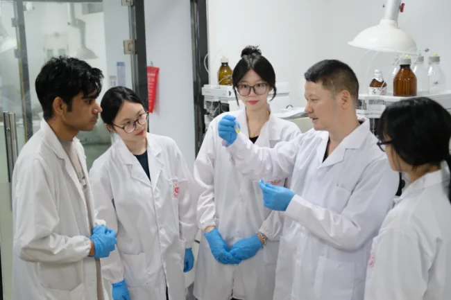

← 返回新闻动态
人民号平台MEDIA COVERAGE · 2026.08.19
田蒋为团队以分子成像技术开辟中药活性成分筛选新路径
人民日报客户端人民号平台刊发专题文章，系统介绍团队将分子成像、谱效导向筛选与中药研究相结合的交叉研究路径。

2026年8月19日，人民日报客户端人民号平台刊发专题文章《以分子成像技术破局 开辟中药活性成分筛选新赛道》，介绍中国药科大学田蒋为团队在中药活性成分精准筛选与药效可视化评价方面的交叉研究进展。
针对传统中药研究中成分复杂、活性物质难以精准定位、药效机制不易阐明等问题，团队以疾病关键靶点和病理特征为切入点，开发特异性分子探针，并结合高内涵成像、色谱分离、质谱鉴定和药理验证，构建“靶点识别—可视化筛选—成分鉴定—功效验证”的研究链条。
报道重点介绍了团队围绕肝纤维化开展的研究工作。团队研发靶向成纤维细胞活化蛋白α（FAPα）的近红外荧光/光声双模态探针 Cs-FAP，并利用该探针筛选95种药用植物提取物，最终从苏木中发现天然活性物质苏木查尔酮。相关工作为中药活性成分发现、功效评价及作用机制研究提供了具有可视化特征的新方法。
团队将继续推动分子成像、分析化学、药理评价与中药资源研究的深度融合，为中药活性物质精准发现和中医药现代化研究提供技术支持。
媒体来源：人民日报客户端人民号平台
发布账号：平邑融媒
原文标题：《以分子成像技术破局 开辟中药活性成分筛选新赛道》